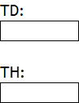
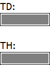
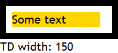
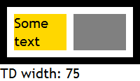

TD 元素定义了一个包含数据的单元格，单元格可能为空（不包含数据）。
除非一个单元格中包含以下内容，否则即为空单元格 (empty cell)：
即便一个单元格是空的，当其 'empty-cells' 特性未明确声明时（默认值为 'show'），应用于其上的 'border' 及 'background' 也能起作用。
关于 'empty cells' 特性的详细信息，请参考 CSS 2.1 规范 17.6.1.1 Borders and Backgrounds around empty cells: the 'empty-cells' property 中的内容。
在 WebKit 内核的浏览器中，当一个单元格为空（empty cell），且不存在 'padding' 及 'border' 时，该单元格的宽度和高度将为 0，即该单元格不可见。
而在 IE6 IE7 IE8(Q) Opera 中空的单元格在某些情况下其宽度也会为 0，从而影响其他单元格的计算后的宽度。
这个问题将造成表格的布局与预期不符。
| IE6 IE7 IE8(Q) Opera | |
|---|---|
| Chrome Safari |
分析以下代码：1.html
<!DOCTYPE html> <html> <head> <style> body { margin:0; } * { font:20px
'Trebuchet MS'; } </style> </head> <body> TD: <table cellpadding="0"
style="width:100px; border:1px solid black;"> <tr> <td id="td"
style="background:gray; height:20px;"></td> </tr> </table> <br />
TH: <table cellpadding="0" style="width:100px; border:1px solid black;">
<tr> <th id="th" style="background:gray; height:20px;"></th>
</tr> </table> </body> </html>这段代码在各浏览器中运行效果如下：
| Chrome Safari | IE6 IE7 IE8 Firefox Opera |
|---|---|
|  |  |
可见，在 Chrome Safari 中，以上空单元格 TD 和 TH 均不可见，通过调试工具可以看到，他们的宽、高度均为 0。
这是一个 Bug，触发条件是：
该 Bug 还将影响包含空单元格的表格中其他单元格尺寸的计算，同时在 IE6 IE7 IE8(Q) Opera 中，此时也会出现问题。如：2.html
<!DOCTYPE html> <html> <head> <style> body { margin:0; } * { font:20px
'Trebuchet MS'; } </style> <script> function $(id) { return document.getElementById(id); }
window.onload = function () { $('info').appendChild(document.createTextNode('TD width: ' +
$('td').offsetWidth)); } </script> </head> <body> <table cellpadding="0"
cellspacing="10" style="width:200px; border:10px solid black;"> <tr> <td
id="td" style="background:gold; width:50%;">Some text</td> <td
style="background:gray;"></td> </tr> </table> <div
id="info"></div> </body> </html>
这段代码在各浏览器中运行效果如下：
| IE6 IE7 IE8(Q) Opera Chrome Safari | IE8(S) Firefox |
|---|---|
|  |  |
在 IE6 IE7 IE8(Q) Opera Chrome Safari 中，第一个单元格的宽度并不是表格中单元格可用宽度的一半，而是几乎布满整个表格行，这是由于第二个单元格触发此 Bug 导致其宽度为 0 导致的。
| 操作系统版本: | Windows 7 Ultimate build 7600 |
|---|---|
| 浏览器版本: |
IE6
IE7 IE8 Firefox 3.6.11 Chrome 8.0.522.11 dev Safari 5.0.2 Opera 10.63 |
| 测试页面: |
1.html
2.html |
| 本文更新时间: | 2010-10-25 |
TD TH empty cell WebKit 空 单元格